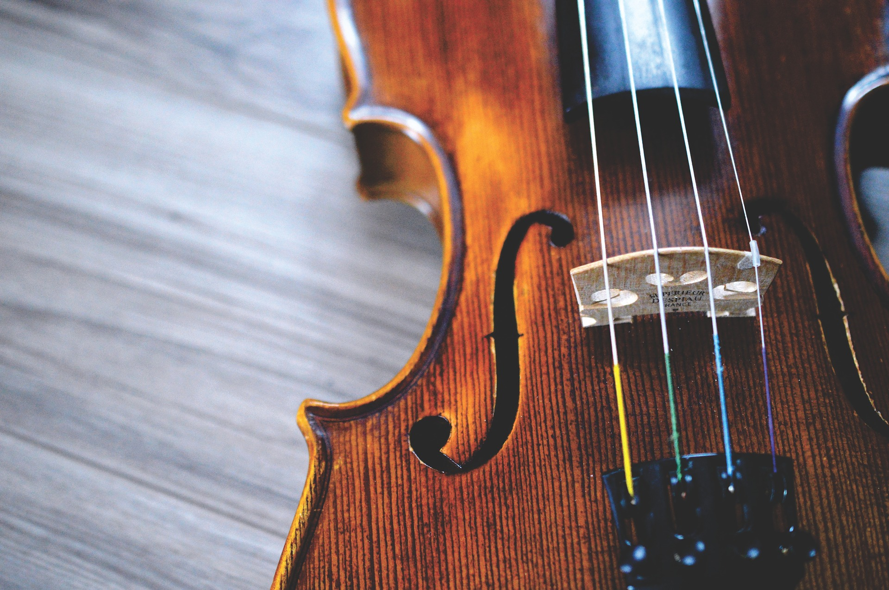
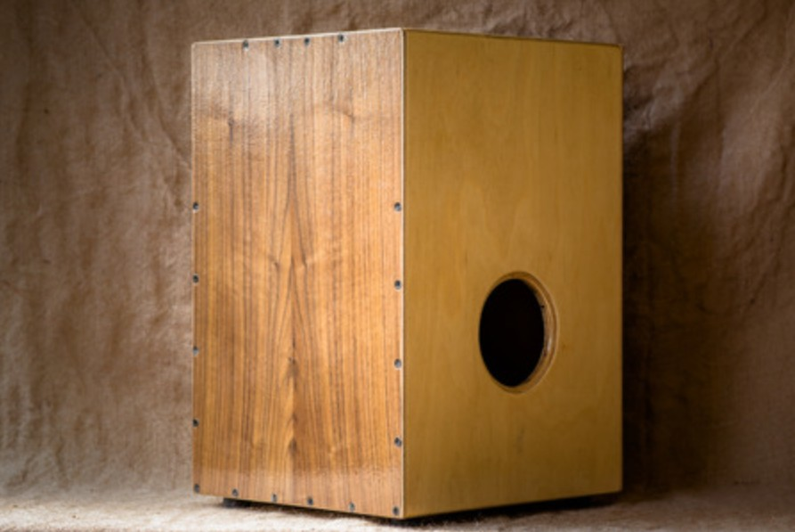

Nous découvrir
Nous sommes un groupe de lycéens originaires de Landerneau passionnés de musique. Depuis maintenant plus de 5 ans nous nous produisons lors de divers occasions telles que la fête de la musique, les spectacles annuels de nos écoles ou encore pendant la journée du partimoine.

A la clarinette Colin Descours

Au violon Louise Girer

Au piano Elouan Gourlay

Au saxophone Jules Guillemette

A la flûte traversière Lisa Le Pape

Aux percussions Josselyn Keryell